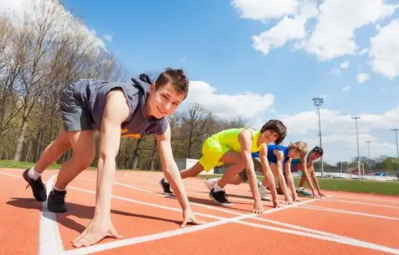
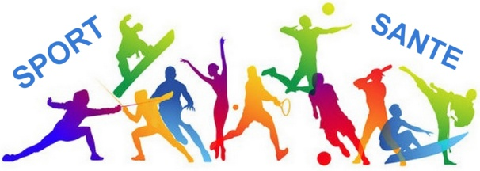

On croit tous savoir ce qu’est le sport. Mais c’est quoi le sport, au juste ? Est-ce que quand je transpire, je fais du sport ? Marcher chaque jour jusqu’à mon lieu de travail fait-il de moi un·e sportif·ve ? Je suis essoufflé·e quand je répare mon évier : j’ai fait du sport ? Quelle différence avec l'activité physique ? On vous éclaire !
le sport permet d’acquérir confiance, autonomie, esprit de décision et d’entraide. Pour les enfants agités, il permet de défouler le trop-plein d’énergie et d’apprendre la maîtrise de soi. Les bienfaits psychologiques du sport chez les enfants les amènent à développer une série de capacités et d'aptitudes bénéfiques pour leur croissance La pratique d’un sport est essentielle chez les enfants. Les bienfaits pour leur développement physique et psychologique leur permettront d’acquérir quelques aptitudes qui favoriseront leur croissance. Depuis les jeux simples dès leur plus jeune âge jusqu’aux pratiques sportives individuelles ou en groupe quand ils sont plus grands, les valeurs inculquées aux enfants leur permettent de grandir et de renforcer leurs capacités cognitives. Cependant, il est très important que les parents ne fassent pas pression sur leurs enfants pour qu’ils pratiquent un sport ou qu’ils en choisissent un à leur place.
le sport pratiqué dans un club permet de développer des relations hors du contexte scolaire et fondées sur d’autres exigences. La performance physique, le rôle au sein de l’équipe et l’importance du travail collectif permettent aux enfants d’acquérir des qualités dans des domaines dépassant le simple cadre des aptitudes physiques.
L’exercice stimule également la croissance de nouveaux vaisseaux sanguins, ce qui entraîne une baisse de la tension artérielle chez les personnes en forme. Au fur et à mesure que le corps pompe plus de sang vers les muscles, il en éloigne des systèmes et des fonctions qui ne sont pas actuellement une priorité, comme la digestion
La différence n’est pas entre l’EPS et le sport, mais entre l’école et les autres lieux où le sport est pratiqué. … Le sport en fait partie: savoir nager, savoir danser, savoir jouer ensemble, savoir faire tourner une roue, etc. ils font partie d’un arrière-plan culturel pour tout le monde
Sport et croissance de l’adolescent sont deux choses liées. Pratiquer une activité sportive à l’adolescence est très important. Peu importe l’âge et le sexe, tout le monde doit se dépenser physiquement. Cela a de nombreux avantages sur le corps et la santé.
D’abord, le sport permet de renforcer les muscles. Une donnée très importante pour les adolescents, en pleine puberté. Leur corps change, grandit, et les muscles doivent suivre. Le sport permet de les développer afin d’être bien solides à l’âge adulte. La transformation physique de l’ado se déroulera dans de meilleures conditions.
Nous pouvons aussi parler du cœur, qui est un organe vital mais aussi un muscle. Faire du sport permet de le renforcer, d’améliorer l’endurance et le travail du cœur. Ainsi, le taux de sucre et de cholestérol dans le sang diminue. En bref, les risques de maladies cardio-vasculaires sont plus faibles en faisant du sport régulièrement.
Enfin, un entraînement sportif permet de perdre du poids et de se sentir mieux dans sa peau. Certaines activités brûlent plus de calories que d’autres, il faut donc choisir son sport intelligemment, en fonction des objectifs que vous avez
150 minutes par semaine - autant d'adultes au moins modérément actifs physiquement. Cette charge de travail peut être accomplie en marchant, faisant du jogging ou faisant du vélo rapidement pendant une demi-heure au moins cinq fois par semaine
Dès l'âge de 30 ans, le corps commence à s'effondrer - d'abord imperceptiblement. Les muscles diminuent, les besoins en calories diminuent, plus de graisse est stockée. L'endurance régulière et la musculation peuvent considérablement ralentir ces processus et réduire le risque de nombreuses maladies graves.
150 minutes par semaine - autant d'adultes devraient être au moins modérément actifs physiquement, recommande l'Organisation mondiale de la santé. Cette charge de travail peut être accomplie en marchant, faisant du jogging ou faisant du vélo rapidement pendant une demi-heure au moins cinq fois par semaine. Le temps requis est gérable, l'effet énorme. En règle générale, pour le bon niveau d'effort, vous devez en effet commencer à transpirer, mais avoir suffisamment de souffle pour pouvoir parler à d'autres athlètes